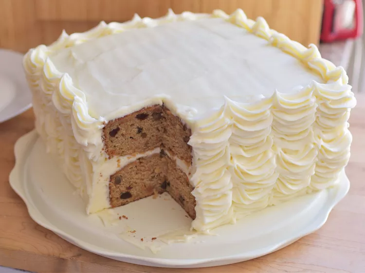

Recipe for a carrot cake

Carrot Apple Cake with Cream Cheese Frosting
This is a nice layered spice cake with added carrot and apple. Cream cheese frosting really takes it over the top.
Ingredients
- cups all-purpose flour
- 2 teaspoons baking powder
- 2 teaspoons ground cinnamon
- 1 teaspoon ground ginger
- ½ teaspoon baking soda
- ½ teaspoon salt
- ¼ teaspoon ground nutmeg
- ¼ teaspoon ground cloves
- ¾ cup unsalted butter, softened
- ¼ teaspoon ground allspice
- ¾ cup unsalted butter, softened
- ¼ cup vegetable oil
- 1 cup firmly packed dark brown sugar
- ¾ cup white sugar/li>
- 4 large eggs, at room temperature
- 2 teaspoons vanilla extract
- 1 cup buttermilk, at room temperature
- 1 ½ cups grated carrot
- ¾ cup raisins (Optional)
- 1 cup peeled and grated Granny Smith apple
Steps
- Preheat oven to 350 degrees F (175 degrees C). Grease two 8-inch square pans and line the bottoms with parchment paper.
- Whisk flour, baking powder, cinnamon, ginger, baking soda, salt, nutmeg, cloves, and allspice together in a bowl; set aside.
- Beat butter, oil, brown sugar, and white sugar together in a large bowl with an electric mixer until light and fluffy. Add eggs one at a time, beating well after each addition. Beat batter for an additional 2 minutes after adding last egg. Beat in vanilla extract. Pour in half of the flour mixture; mix on low speed until just combined. Pour in buttermilk; mix until just combined. Pour in remaining flour mixture; mix until just combined. Fold in carrot, apple, raisins, and pecans.
- Divide batter evenly between the two pans. Spread into an even layer in each pan.
- Bake in the preheated oven until the top of the cake springs back lightly when touched and a toothpick inserted near the center comes out clean, 40 to 45 minutes.
-
Allow cakes to cool in pans for 20 minutes; remove to a wire rack to cool completely, about 1 1/2 hours more.
-
Beat butter in a large bowl with an electric mixer until completely smooth; beat in cream cheese until smooth and thoroughly combined. Beat in confectioners' sugar 1 cup at a time, mixing well after each addition; beat in vanilla and salt. Add in heavy cream; beat on medium-high until frosting is slightly fluffy, about 2 minutes.
- Spread frosting onto one cooled cake layer. Stack layers; frost top and sides.
Chef's note
The frosting recipe makes enough to fill, crumb coat, and then frost the cake with a decorative layer, if desired. The frosting holds up better when chilled, but will not form a 'crust' like traditional buttercream. If it becomes too soft to frost the cake with, place frosting into the fridge for at least 30 minutes to make is easier to use. Keep frosted cake covered and stored in the fridge.
Return to main page